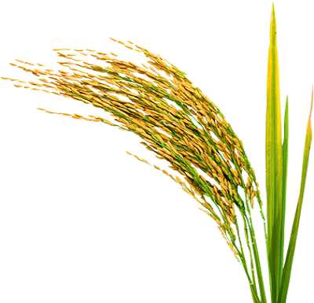
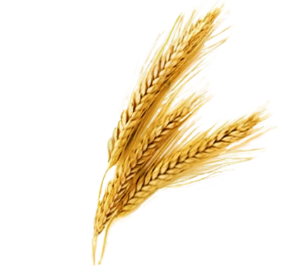
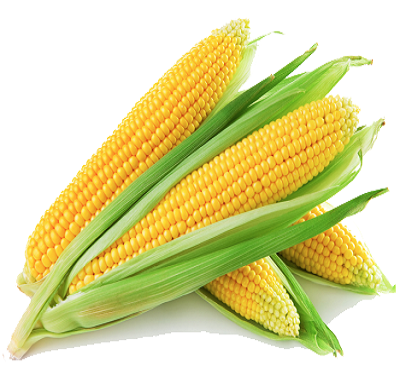
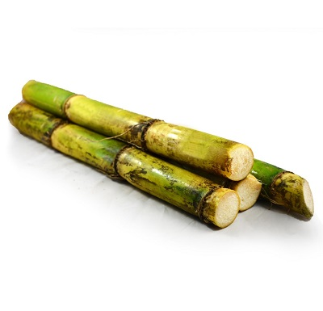

<ion-header>
  <ion-fab vertical="top" horizontal="start">
    <a [routerLink]="'/home'">
      <ion-icon style="font-size: x-large;color: white;" name="arrow-back-outline"></ion-icon>
    </a>
  </ion-fab>
  <ion-toolbar color="primary">
    <ion-title style="text-align: center;">cropinfo</ion-title>
  </ion-toolbar>
</ion-header>

<ion-content>
  <div>
    <ion-card [routerLink]="'/rice'">
      
      <ion-card-header>
        <ion-card-title style="font-weight: bold;">Rice</ion-card-title>
      </ion-card-header>

    </ion-card>
  </div>
  <div>
    <ion-card [routerLink]="'/wheat'" class="ion-activated">
      
      <ion-card-header>
        <ion-card-title style="font-weight: bold;">Wheat</ion-card-title>
      </ion-card-header>

    </ion-card>
  </div>
  <div>
    <ion-card [routerLink]="'/maize'" class="ion-activated">
      
      <ion-card-header>
        <ion-card-title style="font-weight: bold;">Maize</ion-card-title>
      </ion-card-header>

    </ion-card>
  </div>
  <div>
    <ion-card [routerLink]="'/sugarcane'" class="ion-activated">
      
      <ion-card-header>
        <ion-card-title style="font-weight: bold;">Sugarcane</ion-card-title>
      </ion-card-header>

    </ion-card>
  </div>
</ion-content>